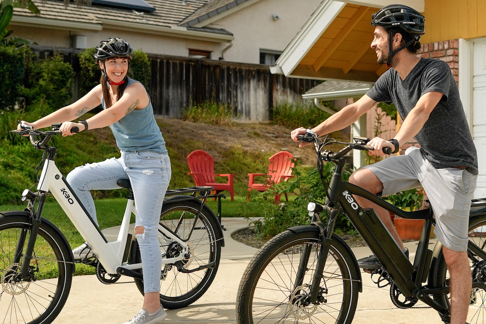

Electric Bike Insurance in the Netherlands
If you’ve spent any time at all in the Netherlands, particularly in Amsterdam and other big Dutch cities, you’ll know how often bikes get stolen.…

If you’ve spent any time at all in the Netherlands, particularly in Amsterdam and other big Dutch cities, you’ll know how often bikes get stolen. Officially, around 80,000 bikes are reported stolen per year.
When you’ve just spent thousands of euros on a brand new electric bike, or an electric cargo bike for transporting the kids, having it stolen is the last thing you want to happen. Thankfully, there is comprehensive electric bike insurance available in the Netherlands that can prevent unfortunate occurrences becoming a financial disaster.
Along with covering theft, the best e-bike insurance policies in the Netherlands also cover you for damage and accidents. With electric bikes, damage and accidents can also add up to substantial amounts. Repairing an ebike is often far more expensive than repairing traditional bikes. And, take my word for it, repairing an electric bike is a lot more complicated, so it’s unlikely you’ll be able to do it without the assistance of a professional.
While there aren’t that many insurers on the market right now, more and more companies are adding ebike policies to their list of services. This is no surprise given how expensive electric bikes can be and how popular they are becoming.
Today, I’m going to explain the best e-bike insurance policies in the Netherlands and give you my personal recommendations. The best policies offer theft protection, collision coverage, liability insurance, and—importantly—great customer service.
Electric Bike Insurance Netherlands: Options
- KingPolis eBike Insurance: https://kingpolis.eu/insurance
- City bike, ebike, and cargo bike insurance available.
- The insurance is arranged at the shop where you purchase your ebike, ensuring your electric bike is insured the minute you pick it up.
- KingPolis’ ebike theft insurance allows you to buy a new ebike of equal value when your old one is stolen. It doesn’t have to be the exact same model.
- Damage insurance includes a €25 deductible.
- Roadside assistance can be used up to three times per year. The assistance will pick you up and deliver you to a bike shop or your home.
- Includes assistance in the right of recourse. This means KingPolis will help you to claim damages against another road user in the event of an accident. Damages could include personal injury as well as damage to the ebike.
- AON eBike Insurance: https://www.aonverzekeringen.nl/en/verzekeringen/elektrischefietsverzekering
- AON covers theft and total loss in its basic package.
- You also have the option of adding roadside assistance, recovery assistance, and accident insurance.
- They require you use an ART approved lock.
- After purchasing ebike insurance from AON, you have 14 days to change your mind. If you cancel the policy in the first 14 days the insurance will never have been in effect. In other words, if you make a claim and then cancel your insurance in the first 14 days your claim will not count.
- Allianz Electric Bike Insurance
- Covers the full value of the ebike insured
- The basic Allianz ebike insurance package includes theft cover and legal assistance.
- Damage and breakdown cover can be added at an additional costs.
- Allianz includes the option to extend the warranty of your ebike battery.
- Two payment options: 3 years or continuous. The continuous package lasts for a minimum of one year after which one months notice is required to end it. The standard 3 year package starts at €95 for the entire period. The continuous standard package costs €2.42 per month. The savings on the 3 year plan only begin with the advanced and complete insurance packages.
- Electric Bike Insurance ABN Amro
- eBike Insurance from ANWB: https://www.anwb.nl/verzekeringen/e-bikeverzekering
Electric Bike Insurance Netherlands: Theft
In Amsterdam, it’s common to hear people talk about the underground black market for bikes. I’ve heard tales of people having their bike stolen in Amsterdam centre and then, 20 minutes later, buying an (obviously stolen) bike from a homeless person in the street for 10-20 euros.
Now, electric bikes are a little more difficult to steal since the removal of the battery renders them rather awkward to move, but ebike theft is still a big thing, particularly because the bikes are so valuable. With any of the electric bike insurance policies mentioned above, you will be covered in the event of theft. However, in most cases, ebike insurance will not cover you if you have forgotten to lock your bike. Or, in some cases, if you have failed to lock it sufficiently.
If you want to take extra steps to secure your ebike, I recommend trying these ebike security accessories.
Report Your Electric Bike Stolen
To claim your electric bike insurance in the Netherlands when you ebike is stolen you will need to report the theft to the police. You can report the theft online here.
How much does ebike insurance cost in the Netherlands?
I checked the price of a €3200 Giant electric bike with a couple of insurance companies and here’s the premium I received with prices per month:
Theft – €7,22
Damage (due to collision or fall) – €2,48
On the Spot emergency repair cover – €1,00
As you can see, electric bike insurance in the Netherlands does not need to be expensive and can be well worth it when you’ve brought an expensive bike.
The ANWB, which is most commonly used in the Netherlands for breakdown cover, offers electric bike insurance at around €85-€100 per year. Their service includes a track and trace system and they promise to return your stolen bike within 48hrs or replace it with a new one.

Is insurance required for an electric bike?
The Netherlands does not currently require you to have insurance for your electric bike unless it can go over 25 kilometres per hour. High-speed ebikes are considered motor vehicles by the Dutch government. Therefore, you are required to have liability insurance if you use one. In addition, high-speed ebikes must have license plates and the rider must wear a helmet.